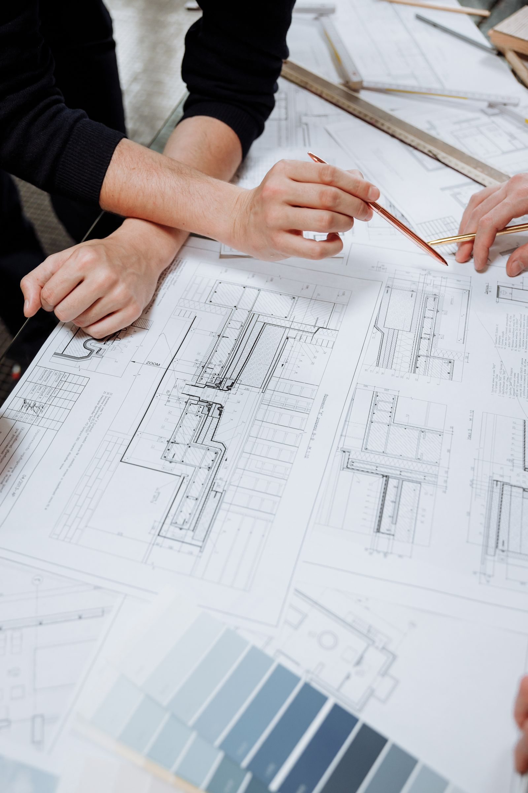

Cartografia · Topografia · Geodésia
Precisão para compreender cada espaço.
A Normal Agrimensura apresenta sua atuação em serviços de cartografia, topografia e geodésia, com atendimento a partir de Belo Horizonte.

Área de atuação
Informação espacial para decisões mais claras.
Atuamos no segmento cadastrado de serviços de cartografia, topografia e geodésia. O escopo de cada atendimento é definido conforme a necessidade apresentada.
Apresentar uma demanda ↗Identificação empresarial
Uma empresa local, com dados claros.
- Razão social
- Normal Agrimensura LTDA
- CNPJ
- 56.301.493/0001-54
- Endereço
- Rua Titânio, 280
Apt 203 Bl 16 · Camargos
Belo Horizonte - MG · 30520-150 - Atividade principal
- Serviços de cartografia, topografia e geodésia
Contato
Conte o que você precisa consultar.
Envie uma mensagem para receber informações sobre o escopo de atendimento.